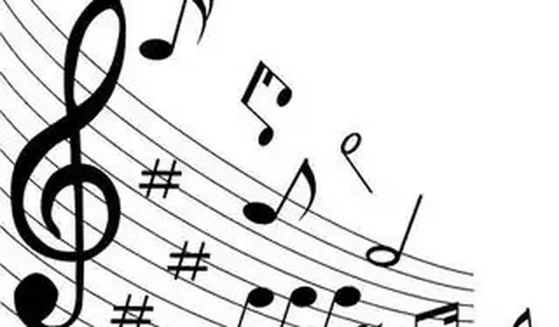
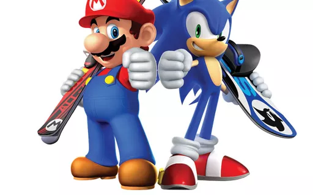
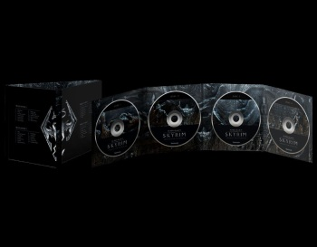

A trilha sonora e sua importância nos jogos
A trilha sonora ajuda a estabelecer o ambiente e a atmosfera do jogo, transportando os jogadores para os cenários e universos fictícios. Por meio de composições musicais, efeitos sonoros e trilhas ambientais, a trilha sonora contribui para a imersão do jogador no mundo do jogo.

A trilha sonora é capaz de evocar uma variedade de emoções nos jogadores, como alegria, tristeza, tensão, empolgação e medo. A música pode se adaptar de acordo com a narrativa e o estado de jogo, intensificando a emoção e tornando as experiências mais memoráveis.

Personagens icônicos e temas específicos muitas vezes são acompanhados por trilhas sonoras distintas. Isso ajuda a criar uma identificação e conexão emocional com os personagens, além de permitir que os jogadores associem músicas específicas a determinadas situações ou eventos dentro do jogo.

A trilha sonora também pode fornecer feedback e informações importantes para os jogadores durante a jogabilidade. Por exemplo, a música de fundo pode sinalizar a proximidade de um inimigo ou indicar que o jogador está progredindo em uma missão.

A trilha sonora desempenha um papel fundamental nas cenas cinemáticas e momentos narrativos do jogo. Ela pode intensificar a tensão em momentos de ação, realçar a beleza de paisagens ou aprofundar a conexão emocional em cenas emocionantes.

Uma trilha sonora marcante pode se tornar um elemento icônico do jogo, ajudando a estabelecer sua identidade e se tornando uma parte duradoura da experiência. Muitas vezes, os jogadores associam determinadas músicas a jogos específicos, evocando memórias e sentimentos nostálgicos.
No geral, a trilha sonora de um jogo desempenha um papel multifacetado, proporcionando uma experiência sensorial mais completa, envolvendo os jogadores em um nível emocional e ajudando a criar uma atmosfera única. Ela contribui para a narrativa, jogabilidade e identidade do jogo, tornando-se uma parte integral e memorável da experiência de jogo como um todo.